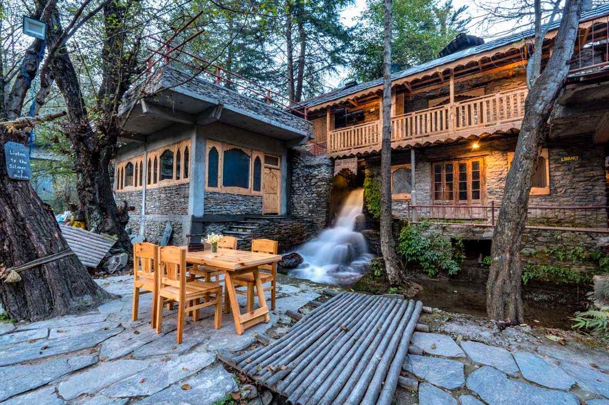
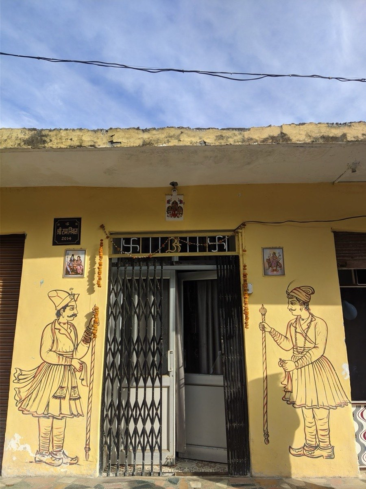
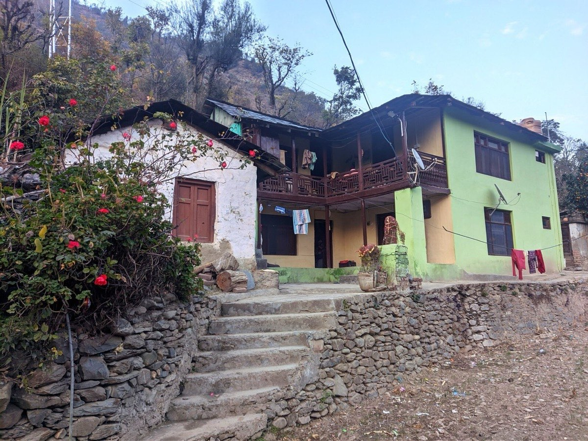
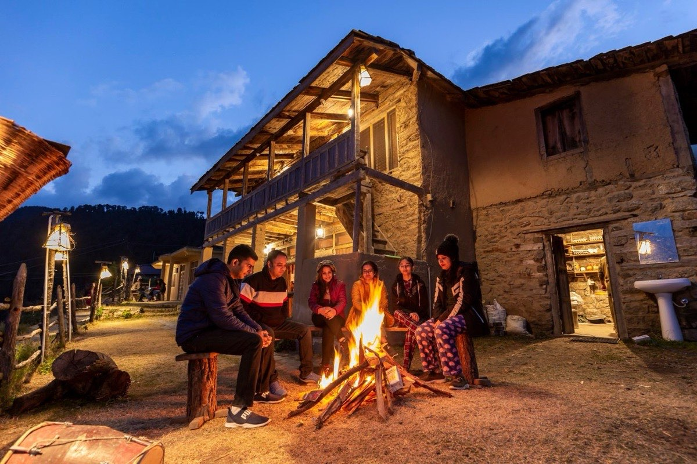
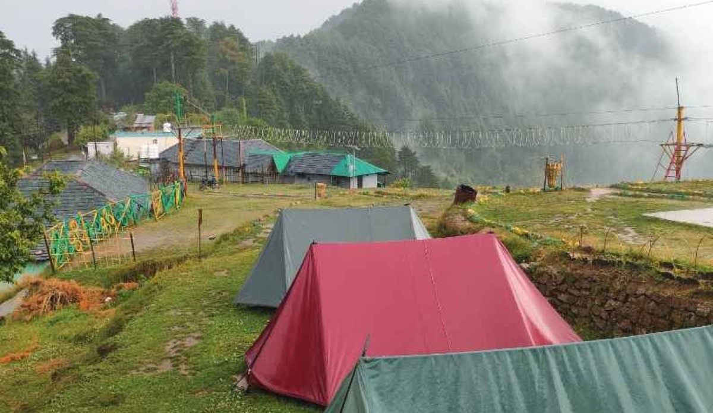
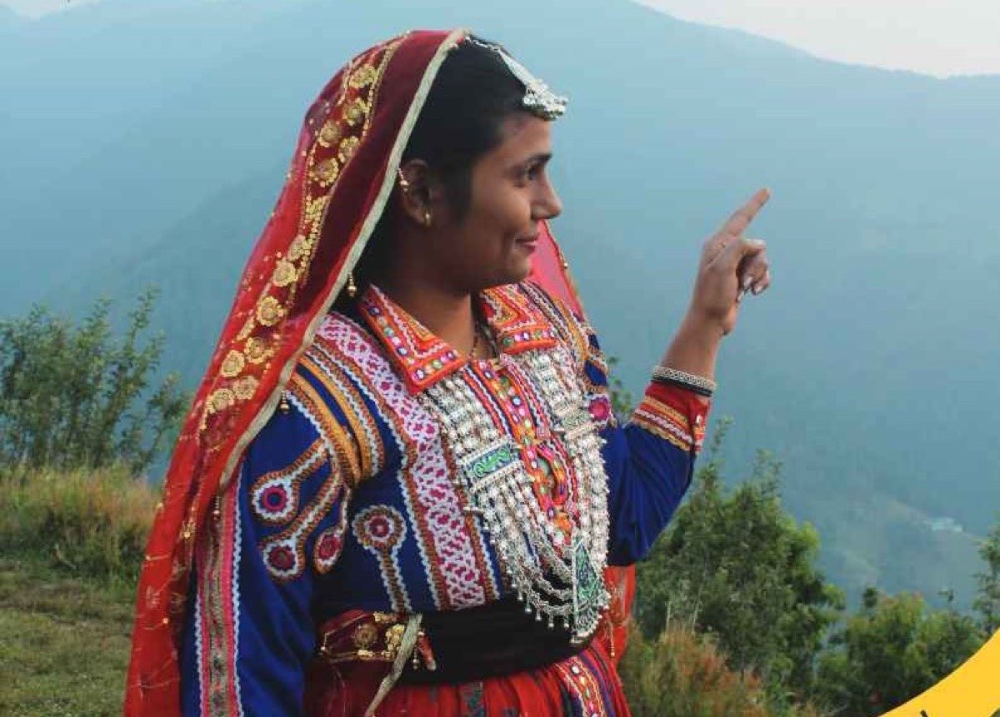

उनके नक्शे पर · 8 days, 3 valleys
On Their Map: an 8-day trip in Chamba
You came looking for a place that isn't on the map. Leave with your name on theirs.
Choose your trip
Each day is a Mark: something you leave behind for people you meet by name. The impact comes first, then what you do. Where you sleep comes last.
Five versions, the same eight causes

Three valleys, eight days
Four nights in Saal Valley, three in Khajjiar. Day 4 is a day trip to Dwat Mahadev, a valley with no guests yet. Read the eight days
-

Days 1 to 3 · Saal Valley
You arrive at H2O House, built over the stream that drives its water mill. Your flour becomes dinner. Four of the valley's eleven homes are open to guests, and you stay in one of them.
-

Day 4 · Dwat Mahadev
NotOnMap has surveyed 21 panchayats here and spoken to more than 800 residents. No guest has stayed yet. You walk, you listen, and what you say helps decide what gets built first.
-

Days 5 to 8 · Khajjiar
In under the deodars to Mystic Village: a kitchen the women own and run, a cleanup that turns plastic into a village bench, a day at the school, and folk tales on the last night.
Your Map of Marks
उनके नक्शे पर आपका नाम
About 90 days later, a note from the village tells you what your Mark became. Your figures are counted from your own booking.
Why trust it

Ask about dates
